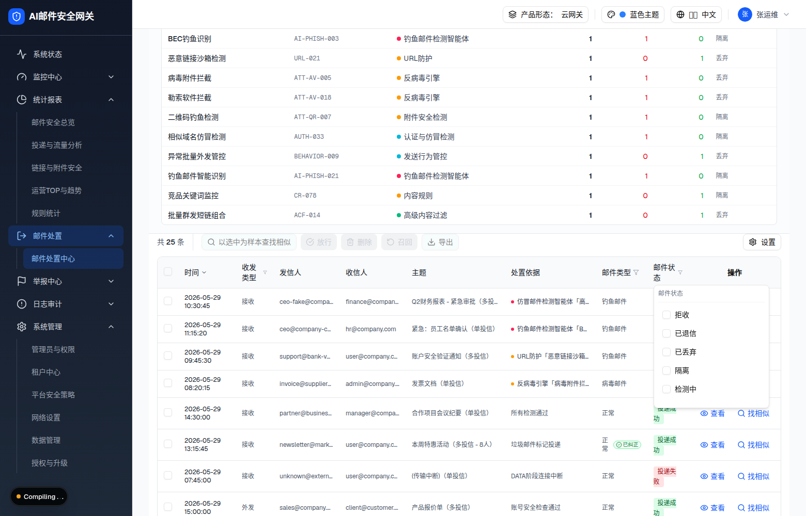

| 属性 | 值 |
|---|---|
| 所属组件 | 2.2 日志表格 InvestigationLogsTable |
| 主文件 | email-handling-disposal-center/index.html |
| 触发路径 | 表格 → 点击表头「邮件状态」（FilterHeader Popover）。收发类型/邮件类型同机制 |
| 范围说明 | 「规则命中统计」不在本规格范围（见主文件说明块） |
下方内嵌为邮件状态筛选弹层真实 HTML。

| 区块 | 内容 |
|---|---|
| 触发 | 表头按钮：文案 + Filter 图标（激活转蓝 + 计数徽） |
| 弹层 | w-56 p-2；头部「邮件状态」+ 激活时「清除筛选」 |
| 17 状态 | 拒收/已退信/已丢弃/隔离/检测中/待审核/审核驳回/已过期/已删除/投递中/投递成功/部分投递成功/投递失败/召回中/召回成功/召回失败/部分召回成功 |
| 组合语义 | 同列多选=OR；跨列（收发类型/邮件类型/邮件状态）由父级合并=AND；勾选即时 onTableFiltersChange（受控） |
| 筛选 chip 条 | 激活后表头上方出现「表头筛选:」chip（琥珀=状态/蓝=方向/绿=类型）+ 单删 + 清除筛选 |
| 比对项 | demo 实际 DOM | 嵌入的 HTML | 一致 |
|---|---|---|---|
| 弹层容器 | w-56 p-2 | 一致 | ✅ |
| 选项数 | 17 复选 | 17 | ✅ |
| 带筛选表头列 | 3 列（方向/类型/状态） | 一致 | ✅ |